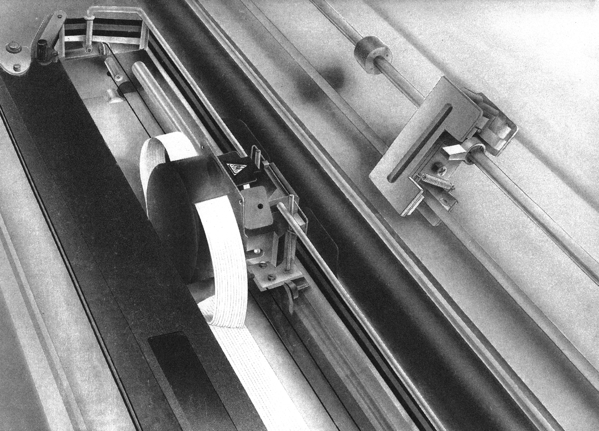
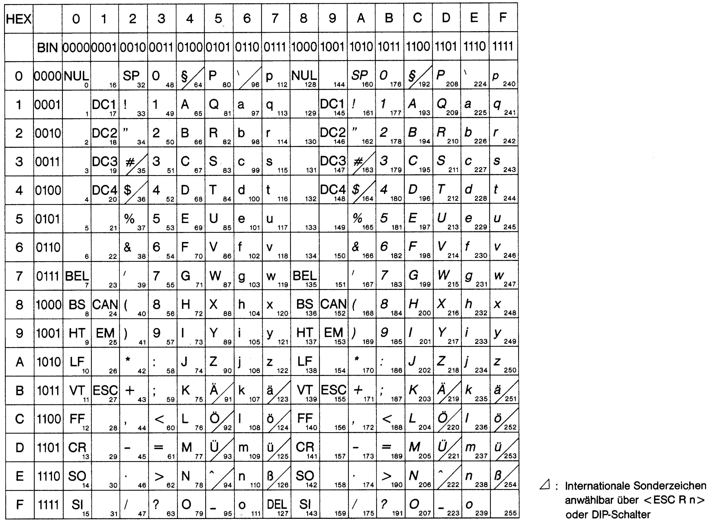
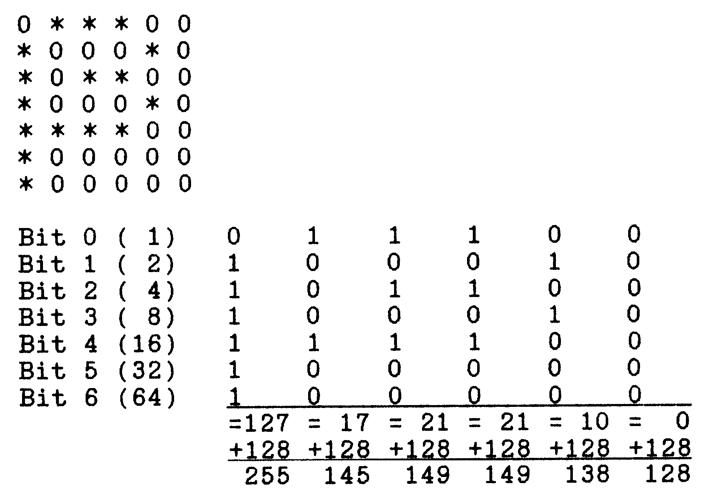

Drucken ohne Rätsel
Wenn man sich ein wenig intensiver mit seinem Computer beschäftigt, so ist die Anschaffung eines Druckers in der Regel unvermeidlich. Es handelt sich dabei nicht etwa um Luxus, sondern vielmehr um ein sehr hilfreiches Zusatzgerät, das einem die Arbeit stark erleichtert. Es stellt sich dabei natürlich vielfach die Frage, wie ein solcher Drucker prinzipiell angesprochen oder bedient wird.

Wir wollen Ihnen nun zeigen, wie die gängigsten Drucker für den C 64 angesprochen werden. Es soll erläutert werden, welche Möglichkeiten ein Drucker bietet und wie diese Möglichkeiten genutzt werden können. Bei den Druckern für den Commodore 64 und anderen Heim- oder Personal-Computern handelt es sich in der Regel um sogenannte Matrixdrucker. Das heißt nichts anderes, als daß der Drucker die einzelnen Zeichen aus winzigen Punkten zusammensetzt, wobei jeder Punkt durch eine Nadel, die gegen ein Farbband auf das Papier schlägt, gedruckt wird. Genauere Angaben zur Funktionsweise eines solchen Matrixdruckers finden Sie im Artikel »Ohne Drucker geht es nicht – eine Entscheidungshilfe«.
Es stellt sich nun natürlich die Frage, wie ein Drucker die Informationen verarbeitet, die vom Computer kommen und vor allem, wie der Benutzer einen Ausdruck herstellen kann. Um das genauer zu verstehen, müssen wir erst einmal begreifen, wie ein Drucker im Prinzip aufgebaut ist. Bei einem der gängigen Matrixdrucker handelt es sich in der Regel um nichts anderes, als um einen vollständigen kleinen Computer, der so wie der C 64 ein eigenes ROM, ein RAM und einen Prozessor besitzt. Zusätzlich ist natürlich noch eine Elektronik zur Steuerung des Druckvorgangs vorhanden. Das ROM des Druckers, also der Festwertspeicher, enthält dabei ein Betriebssystem und die Punktmatrix für jedes einzelne Zeichen, das gedruckt werden kann. Das RAM dient dem Drucker vor allem als Zwischen- und Pufferspeicher. Es erlaubt dem Computer eine effektivere Drucksteuerung. Wenn zum Beispiel ein Text ausgedruckt werden soll, so schickt der Computer die Zeichen an den Drucker. Dieser füllt seinen Pufferspeicher, und während er dann mit dem Drucken des Speicherinhalts beschäftigt ist, kann der Computer wieder andere Arbeiten übernehmen. Der Prozessor des Druckers steuert, wie im Computer auch, sämtliche Abläufe im Drucker. Haben Sie also nun einen Drucker an Ihren Computer angeschlossen, so stellt sich beim Zugreifen auf den Drucker zuerst die Frage, was der Drucker mit den Daten, die Sie ihm schicken, anfangen soll. Dazu muß man wissen, daß ein Drucker normalerweise über zwei verschiedene Betriebsarten verfügt und zwar über eine Betriebsart, in der alle entgegengenommenen Zeichen direkt ausgedruckt werden und eine andere Betriebsart, in der ein Zeichen als Befehl interpretiert wird. Ja, Sie haben ganz richtig gelesen: Ihr Drucker kann verschiedene Befehle ausführen. Zu diesem Zweck hat er einen bestimmten Befehlssatz, der von Druckertyp zu Druckertyp unterschiedlich sein kann; jedoch in wesentlichen Punkten bei den verbreiteten Typen übereinstimmt. Für uns sind im wesentlichen zwei dieser Befehlsformate von Bedeutung. Das ist zum einen der Befehlssatz der Commodore-Drucker oder der Drucker mit Commodore-Interface und zum anderen der Befehlssatz der Epson-Drucker. Der Epson-Befehlssatz ist dabei unter dem ESC/P-Standard (Epson Standard Code for Printers) zusammengefaßt, an den sich die meisten der bekannten Druckertypen halten. Diese Druckertypen sind dabei, wie die Epson-Drucker, mit einer Centronics kompatiblen Schnittstelle ausgestattet und lassen sich an einen C 64 nicht direkt anschließen. Der Anschluß erfolgt hier mit speziellen Interfaces oder über den User-Port mit einer Software-Centronics-Schnittstelle. Dazu kommen wir später. Zuerst sollen uns die Commodore-Drucker interessieren.
Es stellt sich an dieser Stelle natürlich die Frage, was für einen Sinn die einzelnen Befehle bei den Druckern haben. Diese Frage ist schnell beantwortet: Die Befehle dienen der Wahl der jeweiligen Druckmodi. Wenn Sie ein Zeichen auf dem Bildschirm Ihres Computers ausgeben, so wird das Zeichen so dargestellt, wie der Bildschirm das zuläßt; also in einem bestimmten Punktraster mit einer bestimmten Größe und so weiter – bei einem Drucker ist das anders. Hier gibt es in der Regel sehr verschiedene Möglichkeiten, ein Zeichen zu drucken. Es kann dick, dünn, hoch, niedrig, normal oder invers sein. Darüber hinaus kann der Zeilenabstand zwischen zwei Zeilen eingestellt werden. Bei einem Drucker ist es möglich, die folgende Zeile direkt an die vorhergehende anzuschließen oder einen Zwischenraum zur besseren Lesbarkeit zu lassen.
Alle diese Einstellungen müssen einem Drucker natürlich mitgeteilt werden. Er muß also wissen, ob er als nächstes einen Befehl ausführen oder ein Zeichen drucken soll. Die Commodore-Drucker lehnen sich dabei verständlicherweise an den Zeichensatz des Computers an. Dieser kann auf dem Bildschirm zum Beispiel mit PRINT CHR$(14) auf Kleinschrift umschalten. Das gleiche geht auch auf einem Commodore-Drucker. Senden Sie den Code CHR$(14) an den Drucker, so werden alle folgenden Zeichen in Groß-/Kleinschrift und nicht mehr in Graphic-/Großschrift ausgegeben. Das folgende kleine Beispiel veranschaulicht dies:
OPEN 4,4
PRINT#4,CHR$(14);"Das ist ein Test"
CLOSE 4Es muß jedoch bei dieser Methode darauf geachtet werden, daß der Druckerbefehl in diesem Fall nur für den direkt nachfolgenden Text Gültigkeit hat. Beim Commodore 64 wird jeweils der gesamte Bildschirm umgeschaltet; bei einem Drucker gilt der Befehl nur für die nachfolgende Zeichenkette oder eine einzige Druckzeile. Wie Sie sehen, werden die einzelnen Befehle an den Drucker gesendet, wie jedes andere Zeichen auch. Der Drucker »weiß« dabei ganz genau, daß diese Zeichen nicht gedruckt werden können und führt den Befehl entsprechend aus. Es sei an dieser Stelle vielleicht darauf hingewiesen, daß bei Commodore und auch im amerikanischen ASCII-Zeichenstandard die Zeichen mit den Codes CHR$(0) bis CHR$(31) generell kein druckbares Zeichen, sondern Steuercodes darstellen, die bestimmte Funktionen übernehmen. Der Code 13 steht dabei beispielsweise für den Wagenrücklauf (carriage return), der auf dem Computer dem Drücken der RETURN-Taste entspricht. In Tabelle 1 sind die wichtigsten Steuercodes der Commodore-Drucker MPS 801, 802 und 803 zusammengefaßt.
| Drucker-Steuercodes für | MPS 801/803 | MPS 802 |
|---|---|---|
| Bedeutung | ||
| Bit-Muster-Modus ein (Drucken ohne Zwischenraum!) | CHR$ (8) | – |
| Zeilenvorschub (line feed) | (10) | (10) |
| Wagenrücklauf (carriage return) mit Zeilenvorschub | (13) | (13) |
| Sperrschrift/erweiterte Zeichen | (14) | (14) |
| Standardzeichen ein | (15) | (15) |
| Druckpositionsbestimmung | (16) | (16) |
| Textmodus ein (unshift) | (17) | (17) |
| Reverses Drucken ein (RVS on) | (18) | (18) |
| Seitenaufteilung aus | – | (19) |
| Wiederholen des Bitmusters | (26) | – |
| Druckstartposition – Punktadresse | (27) | – |
| Stringabschluß | – | (29) |
| Anführungszeichen | (34) | (34) |
| Wagenrücklauf ohne Zeilenvorschub | – | (141) |
| Grafik-Modus (hochgeschaltet: shift) | (145) | (145) |
| Reverses Drucken aus (RVS off) | (146) | (146) |
| Seitenaufteilung an | – | (147) |
| Seitenvorschub | – | (12) |
Es sei an dieser Stelle vielleicht darauf hingewiesen, daß der Wagenrücklauf (carriage return; CHR$(13)) und der Zeilenvorschub (line feed; CHR$(10)) normalerweise nichts miteinander zu tun haben. Bei Ihrem Computer sind beide Befehle miteinander verknüpft; und auch ein Commodore-Drucker führt beim Empfangen des Codes 13 einen Wagenrücklauf aus, wobei gleichzeitig in die nächste Zeile gesprungen wird. Im allgemeinen erfolgt bei einem Wagenrücklauf jedoch kein Zeilenvorschub, das heißt, der Cursor auf dem Bildschirm oder der Druckkopf beim Drucker würde auf den Anfang der gleichen Zeile gesetzt. Bei Druckern von Commodore ist das, wie gesagt, miteinander verknüpft. Für andere Druckertypen gilt das jedoch in der Regel nicht. Hier muß der Zeilenvorschub explizit angegeben oder durch Schalter im Inneren des Druckers so eingestellt werden, daß er bei einem Carriage Return automatisch erfolgt. Es sei in diesem Zusammenhang vielleicht auf eine Besonderheit der Commodore-Computer hingewiesen. Wenn Sie zum Beispiel ein Listing ausgeben wollen, so ist eine der gängigen Befehlszeilen dazu folgende:
OPEN 1,4: CMD 1: LIST <RETURN>Hier eröffnen Sie eine Datei mit der Nummer 1 und sprechen darüber den Drucker mit der Geräteadresse 4 an. Der CMD-Befehl sorgt dabei dafür, daß das Listing, das üblicherweise auf dem Bildschirm erscheinen würde, nun auf dem (hoffentlich angeschlossenen) Drucker ausgegeben wird. Der Computer gibt dabei am Ende einer jeden Zeile ein Wagenrücklauf-Kommando an den Drucker, so daß an den Anfang der nächsten Zeile zurückgegangen wird. Eröffnen Sie jedoch eine Datei mit einer Nummer, die größer als 128 ist, so schickt der Computer zusätzlich zu dem normalen Wagenrücklauf noch ein Line-Feed-Kommando an den Drucker. Das erlaubt die Ausgabe eines Listings mit freigelassenen Zwischenräumen zwischen zwei Zeilen. Bei Druckern, die bei einem Carriage Return nicht automatisch auch ein Line Feed senden, erlaubt diese Anwendung einen einwandfreien Ausdruck, ohne daß die DIP-Schalter, die oft im Inneren des Druckers liegen, angetastet werden müssen. Zu dieser Befehlsfolge ein Beispiel:
OPEN 129,4: CMD 129: LIST <RETURN>Außer den schon erwähnten Befehlscodes, die wie einfach zu druckende Zeichen an den Drucker übertragen werden, gibt es bei einigen Commodore-Druckern und Kompatiblen, beziehungsweise Druckern mit einem Commodore-Interface noch eine andere Art der Befehlsübertragung; nämlich die Sekundäradressen im OPEN-Befehl.
Bei einem normalen Ausdruck wird die Sekundäradresse in der Regel nicht benötigt und deshalb auch nicht angegeben. Der Computer setzt dann automatisch eine Null. Diese Null ist jedoch auch für einen Commodore-Drucker ein Befehl und »sagt« diesem, daß er die nun folgenden Zeichen als Großbuchstaben und Grafikzeichen ausdrucken soll (es sei denn, der Befehl CHR$(14) fordert etwas anderes). In Tabelle 2 sehen Sie die Sekundäradressen der Commodore-Drucker mit ihren jeweiligen Funktionen aufgeführt.
Sekundäradressen im »Open«-Befehl beim MPS 802:
| 0 | Drucken von Großbuchstaben und Grafikzeichen (Grafik-Modus) |
| 1 | Drucken der Daten nach einem vorher definierten Format |
| 2 | Speicherung der Formatierungsdaten |
| 3 | Angabe der Zeilenanzahl pro Seite |
| 4 | Absetzen der Format-Fehlerdiagnose-Nachricht |
| 5 | Definition eines programmierbaren Zeichens |
| 6 | Spezifizierung von Leerzeilen zwischen gedruckten Zeilen |
| 7 | Drucken von Klein- und Großbuchstaben (Textmodus) |
| 8 | nicht benutzt |
| 9 | Unterdrückung des Drucks von Fehlerdiagnose-Nachrichten |
| 10 | Drucker in Grundstellung zurücksetzen |
Eine »Datei«-Nummer größer als 127 im »OPEN«-Befehl bewirkt im Ausdruck einen doppelten Zeilenvorschub; es wird also jeweils eine Leerzeile ausgegeben (zum Beispiel in einem Listing).
zum Beispiel OPEN 130,4,0
Wie schon erwähnt, wirkt der Code CHR$(14) nur jeweils für die direkt darauffolgenden Daten. Soll nun ein ganzer Text in Klein-/Großbuchstaben ausgedruckt werden, so ist die Verwendung der Sekundäradresse 7 sinnvoll. Hier wird der Drucker komplett in den Klein-/Großschriftmodus umgeschaltet, und es ist dann zum Beispiel möglich, ein Listing in Klein-/Großschrift auszudrucken:
OPEN 1,4,7: CMD 1: LIST <RETURN>Die Bedienung der Drucker von Commodore, oder die Bedienung von Druckern mit einem Interface, das den entsprechenden Drucker einen Commodore-Drucker simulieren läßt, ist also recht einfach. Es werden sowohl Zeichencodes als auch Sekundäradressen für die Druckersteuerung verwendet. Anders verhält es sich bei Epson-Druckern und Epson-Kompatiblen. Hier erfolgt die Befehlsübergabe ein wenig anders, da diese Drucker in der Regel einen viel größeren Befehlsvorrat besitzen und die Anzahl der »normalen« Steuerzeichen begrenzt ist. Außerdem verfügen diese Drucker in der Regel über eine Centronics-kompatible Schnittstelle, um an die meisten Computer angeschlossen werden zu können. Diese Computer können aber in der Regel nicht mit Sekundäradressen arbeiten, so daß auch diese Möglichkeit der Befehlsübermittlung wegfällt.
Hier (im ESC/P-Standard) arbeitet man mit sogenannten Escape-Sequenzen. Das Escape kommt dabei vom ASCII-Steuerzeichen ESC, das auf den meisten Computern auch als eigene Taste vorhanden ist. Dabei wird jedoch nicht auf die schon bekannten Standardsteuerzeichen von 0 bis 31 verzichtet. Diese behalten ihre Funktion auch weiterhin, wobei jedoch nun der ASCII-Standard (ASCII = American Standard Code for Information Interchange) gilt, an den sich Commodore bei seinen Druckern und Computern nur sehr bedingt gehalten hat. Die einzelnen Steuerzeichen und ihre Bedeutung sind in Tabelle 3 dargestellt.

Das ESC-Zeichen stellt ein Steuerzeichen mit dem Code 27 ($1B) dar und kann vom C 64 aus mit der Anweisung CHR$(27) an einen Drucker geschickt werden.
Soll nun ein Befehl an den Drucker gesendet werden, so wird das ESC-Zeichen übergeben. Danach folgt der eigentliche Befehlscode, der nun den gesamten Bereich der 256 möglichen Zeichen abdecken kann. Wie Sie sehen, ist also auf diese Art und Weise schon ein Druckerbefehlssatz von 256 Grundbefehlen möglich, wobei eventuelle weitere Befehlsunterteilungen nicht berücksichtigt sind. Wir wollen uns diese Art der Befehlsübergabe einmal etwas genauer betrachten. Sehen Sie sich dazu einmal die Tabelle 4 an. Sie enthält die wichtigsten Befehle der Epson- und kompatibler Drucker.
ESC/P-Steuercodes
| Drucken und Zeilenvorschub | |
|---|---|
| – Druckkopfrücklauf | CR |
| – Zeilenvorschub | LF |
| – Zeilenvorschub um n/180" (24 Pin) | ESC J |
| – Zeilenvorschub um n/216" (9 Pin) | ESC j |
| Formatsteuerung | |
| I. Vertikal | |
| (1) Zeilenabstand | |
| – Zeilenabstand 1/8" | ESC 0 |
| – Zeilenabstand 1/6" | ESC 2 |
| – Zeilenabstand n/180" (24 Pin) | ESC 3 |
| – Zeilenabstand n/60" (24 Pin) | ESC A |
| – Zeilenabstand 7/72" (8 Pin) | ESC 1 |
| – Zeilenabstand n/216" (8 Pin) | ESC 3 |
| – Zeilenabstand n/72" (8 Pin) | ESC A |
| (2) Formularvorschub und Formularlänge | |
| – Formularvorschub | FF |
| – Formularlänge in Zeilen | ESC C |
| – Formularlänge in Zoll | ESC C 0 |
| (3) Vorschub auf neues Formular | |
| – Vorschub auf neues Formular setzen | ESC N |
| – Vorschub auf neues Formular löschen | ESC 0 |
| (4) Vertikale Tabulierung | |
| – Vertikaler Tabulator | VT |
| – Vertikale Tabulatorsprünge setzen | ESC B |
| – Auswahl eines VFU-Kanals | ESC / |
| – VFU-Position setzen | ESC b |
| II. Horizontal | |
| (1) Rand | |
| – Rechten Rand setzen | ESC Q |
| – Linken Rand setzen | ESC 1 |
| (2) Horizontale Tabulierung | |
| – Horizontaler Tabulator | HT |
| – Horizontalen Tabulator setzen | ESC D |
| (3) Zeichenzwischenraum | |
| – Zeichenzwischenraum setzen | ESC (space) |
| (4) Punktposition | |
| – Absolute Punktposition setzen | ESC $ |
| – Relative Punktposition setzen | ESC \ |
| (5) Randausgleich | |
| – Automatischer Randausgleich | ESC a |
| III. Horizontal und Vertikal | |
| – Horizontale/Vertikale Tab.Einheiten | ESC e |
| – Horizontale/Vertikale Tab.Sprünge | ESC f |
| Drucksteuerung | |
| I. Druckqualität | |
| – Umschalten zwischen Entwurfs-/Schönschriftqualität | ESC x |
| II. Schriftart | |
| – Umschalten auf Schriftart »Elite« | ESC M |
| – Schriftart »Elite« löschen bzw. »Pica« setzen | ESC P |
| – Proportionalschrift-Modus setzen/löschen | ESC p |
| – Wahl der Schriftartenfamilie | ESC k |
| III. Druckmodi | |
| (1) Breitschrift | |
| – Breitschrift-Modus mit autom. Rückschaltung | SO |
| – Breitschrift-Modus mit autom. Rückschaltung | ESC SO |
| – Breitschrift-Modus mit autom. Rückschaltung löschen | DC 4 |
| – Breitschrift-Modus setzen/löschen | ESC W |
| (2) Engschrift | |
| – Engschrift-Modus setzen | SI |
| – Engschrift-Modus setzen | ESC SI |
| – Engschrift-Modus löschen | DC 2 |
| (3) Fettschrift | |
| – Fettschrift-Modus setzen | ESC E |
| – Fettschrift-Modus löschen | ESC F |
| (4) Doppelanschlag | |
| – Doppeldruck-Modus setzen | ESC G |
| – Doppeldruck-Modus löschen | ESC H |
| (5) Kursivschrift | |
| – Kursivschrift-Modus setzen | ESC 4 |
| – Kursivschrift-Modus löschen | ESC 5 |
| (6) Unterstreichen | |
| – Unterstreichungs-Modus setzen/löschen | ESC - |
| (7) Potenzierung/Indizierung | |
| – Potenzierungs-Modus setzen | ESC S 0 |
| – Indizierungs-Modus setzen | ESC S 1 |
| – Potenzierungs-/Indizierungs-Modus setzen/löschen | ESC T |
| (8) Auswahlmodus | |
| – Druckmodi auswählen | ESC ! |
| Zeichensätze | |
| – Anwählen internationaler Zeichensätze | ESC R |
| – Sonderzeichen ASCII-Code 128-159D | ESC 6 |
| – Steuercodes ASCII-Code 128-159D | ESC 7 |
| – Internationale Zeichentabelle | ESC I |
| – Spezialzeichensatz | ESC m |
| – Wahl des ESC/P-Tabelle (Kursiv/Grafik) | ESC t |
| Bitmuster | |
| – Bitmuster-Modus in Normaldichte setzen | ESC K |
| – Bitmuster-Modus mit doppelter Dichte setzen | ESC L |
| – Bitmuster-Modus mit doppelter Dichte und doppelter Geschwindigkeit setzen | ESC Y |
| – Bitmuster-Modus mit vierfacher Dichte setzen | ESC Z |
| – Bitmuster-Modus anwählen | ESC * |
| – Bitmuster-Modus zuordnen | ESC ? |
| – 9-Punkt-Bitmuster-Modus | ESC Y |
| Ladbare (benutzerdefinierbare) Zeichen | |
| – Ladbaren Zeichensatz anwählen/abwählen | ESC % |
| – Ladbare Zeichen definieren | ESC & |
| – ROM-Zeichensatz kopieren | ESC : 0 |
| Verschiedene Codes | |
| – Summer | BEL |
| – Rückschritt | BS |
| – Drucker initialisieren | ESC @ |
| – Papierende-Erkennung abschalten | ESC 8 |
| – Papierende-Erkennung einschalten | ESC 9 |
| – Druckkopf in Ausgangsstellung bringen | ESC < |
| – Druckrichtung wählen | ESC U |
| – Drucken mit halber Geschwindigkeit setzen/löschen | ESC s |
| – Kontrolle des Ausdrucks | ESC i |
| – Autom. Einzelblatteinzug ein/aus | ESC EM |
| Eingabedaten-Steuerung | |
| – Löschen des Druckpuffers | CAN |
| – Löschen des letzten druckbaren Zeichens | DEL |
| – Drucker anwählen | DC 1 |
| – Drucker abwählen | DC 3 |
| – Modus-Druckdaten wiederholen/setzen | ESC V |
| – MSB-Steuerung löschen | ESC # |
| – MSB-Steuerung setzen | ESC > |
| – MSB-Steuerung zurücksetzen | ESC = |
| Ladbarer Zeichengenerator | |
| – Zeichengenerator definieren | ESC& |
| – Ein-/Ausschalten ladbaren Zeichengenerator | ESC% |
| – Kopieren internen ZG auf ladbaren ZG | ESC:0 |
Als Beispiel schalten wir einmal in einen anderen Druckmodus; nämlich von Normalschrift auf Doppelanschlag. In diesem Modus werden von Epson-kompatiblen Druckern alle Zeichen zweimal übereinander gedruckt, wobei ein geringfügiger Zeilenvorschub erfolgt. Das Ergebnis ist eine stärkere und schönere Schrift:
OPEN 1,4
PRINT#1,CHR$(27);CHR$(71);
CLOSE 1Der Code 71 entspricht außerdem einem großen »G«, weshalb der Befehl für den Doppelanschlag auch mit ESC G bezeichnet werden kann. Wollen wir den Doppelanschlag wieder rückgängig machen, so müssen wir nur den Code ESC H an den Drucker senden:
OPEN 1,4
PRINT#1,CHR$(27);CHR$(72);
CLOSE 1Wie Sie sehen, ist auch im ESC/P-Standard die Befehlsübergabe an einen Drucker denkbar einfach. Es darf jedoch nicht vergessen werden, daß auch die normalen ASCII-Steuerbefehle noch vorhanden sind. Carriage Return beispielsweise hat nach wie vor den Code 13 und Line Feed entspricht der Codezahl 10. Ansonsten gelten die übrigen ASCII-Zeichen (Tabelle 3). Hat Ihr Drucker also beispielsweise einen eingebauten Summer, so können wir ihn dazu veranlassen, Töne von sich zu geben:
OPEN 1,4
PRINT#1,CHR$(7);
CLOSE 1Wichtig für den Computeranwender ist aber natürlich noch eine weitere Eigenschaft von vielen Druckern: Der Grafik- oder Bitmapmodus.
Dieser Grafikmodus ist natürlich nur auf grafikfähigen Druckern möglich, was der Commodore MPS 802 zum Beispiel nicht ist! Außerdem muß beim Druck von Grafiken darauf geachtet werden, mit wievielen Nadeln der Matrixdrucker arbeitet. Beim C 64 besteht nämlich jedes Zeichen aus 8 mal 8 Punkten; MPS 801 und 803 können jedoch nur maximal 7 Punkte in der Senkrechten ansteuern. Es fehlt hier also eine Punktreihe. Der Epson FX-80 wiederum verfügt über 9 Nadeln; er hat also eine »zuviel«.
Gerade im Grafikmodus der Drucker müssen wir zwischen Commodore-Druckern und Druckern von Fremdherstellern unterscheiden. Verwenden Sie den Drucker eines Fremdherstellers außerdem mit einem Interface für den seriellen Bus des Commodore 64, so sind außerdem die Eigenheiten des jeweiligen Interfacetyps zu beachten. Es sei an dieser Stelle auf unseren Artikel über Interfaces in der 64'er-Ausgabe 2 verwiesen, der die Eigenheiten der bekanntesten Interfaces vorstellt.
Im folgenden ein paar Beispiele, wie Sie auf mehreren Druckertypen eine Einzelnadelansteuerung vornehmen können.
Zuerst die beiden Commodore-Drucker MPS 801 und 803. Diese Drucker besitzen 7 Drucknadeln und können über den Code 8 ein freidefinierbares Sonderzeichen drucken. Bei der Definition dieses Sonderzeichens ist zu beachten, daß jeder Drucknadel ein Bit in einem Byte zugeordnet wird, wobei die oberste Nadel dem Bit 0 und die unterste Nadel dem Bit 6 eines Bytes entspricht. Da der MPS 801 und 803 mit einer 7 mal 6 Punktmatrix arbeitet, benötigen wir für die Definition eines Zeichens also 6 Byte. Bild 1 zeigt, wie so ein Zeichen durch 6 entsprechende Bytes definiert wird. Listing 1 zeigt, wie Sie das entsprechende Zeichen auch auf dem Drucker ausgeben können.

10 DATA 255,145,149,149,138,128 20 FOR I = 1 TO 6 30 READ A: A$=A$+CHR$(A) 40 NEXT I 50 OPEN 1,4 60 PRINT#1,CHR$(8);A$;CHR$(15);"= SCHARFES S" 70 CLOSE 1
Bei Epson-kompatiblen Druckern funktioniert diese Ansteuerung ganz ähnlich; nur gibt es hier meistens verschiedene Grafikmodi, die von der Anzahl der Drucknadeln abhängen. Da viele Computer mit einer Zeichenhöhe von 8 Punkten arbeiten, haben Drucker im ESC/P-Standard die Möglichkeit, einen 8-Nadel-Grafikmodus zu realisieren. Der Drucker reagiert dann, als besäße er nur 8 Nadeln und kann so sehr einfach angesteuert werden.
Bei diesen Druckern macht sich der, in der Regel ziemlich große, Pufferspeicher positiv bemerkbar. Der Computer sendet die einzelnen Daten für das Bitmuster, wobei diese vom Drucker gespeichert werden. Erst wenn der Computer bis zu einer ganzen Druckzeile gesendet hat, werden die Werte umgesetzt und ausgedruckt.
Im ESC/P-Standard schaltet das Kommando ESC * den Bitmustermodus für 8 Nadeln ein. Direkt hinter diesem Befehl folgt die Einstellung des Druckmodus (siehe Handbuch des Druckers) und danach die Anzahl der Bitmuster/Bytes, die gesendet werden sollen. In Listing 2 sehen Sie ein kleines Beispielprogramm, das auf einem Epson-Drucker ein Bitmuster erzeugt.
10 OPEN 4,4 20 PRINT#4,CHR$(27);"*";CHR$(0);CHR$(100)CHR$(0); 30 FORX=129TO229 40 PRINT#4,CHR$(X); 50 NEXT 60 CLOSE4 READY.
Diese ganzen Angaben über spezielle Befehle sind natürlich mit Vorsicht zu genießen, wenn Drucker anderer Hersteller oder irgendwelche »exotischen« Interfaces verwendet werden. Es sollte hier nur ein kleiner Einblick in die Anwendung von Steuerzeichen auf Druckern gewährt werden, der zum Experimentieren anregen soll. Es ist wohl eine der schönsten Einsatzmöglichkeiten eines Druckers, wunderbare Grafikbilder oder seltsame Schriftarten zu drucken, wobei der Kreativität des Benutzers kaum Grenzen gesetzt sind.
Natürlich konnten wir Ihnen hier keine komplette Drucker-Schulung geben. Trotzdem hoffen wir, in Ihnen die »Lust« aufs Programmieren eines Druckers geweckt zu haben. Für den eingefleischten Drucker-Liebhaber gibt es ohnehin nichts schöneres, als den Drucker zu immer neuen Kunststücken zu bewegen.
(Karsten Schramm/aw)